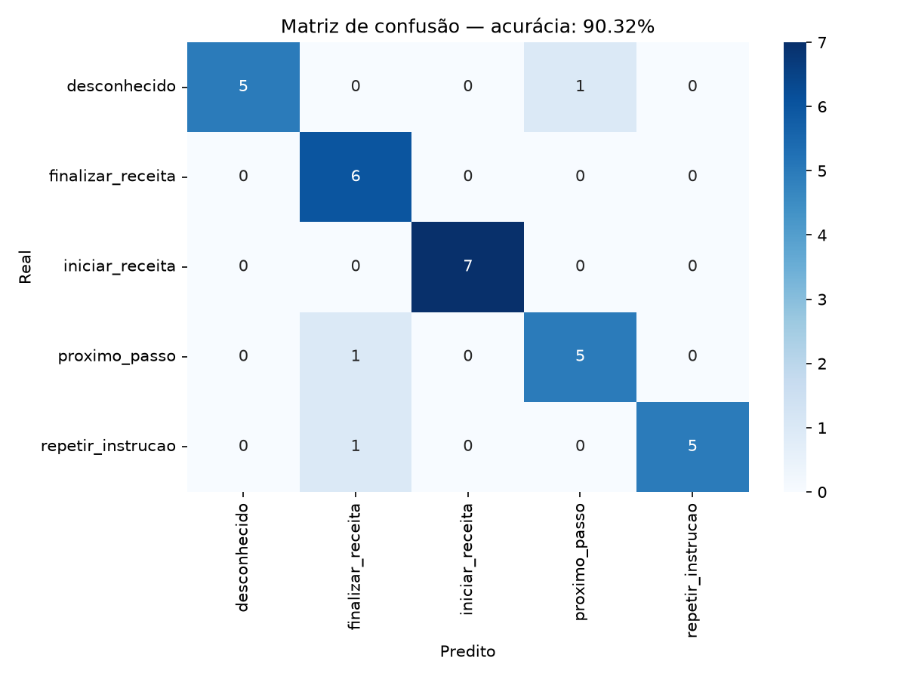
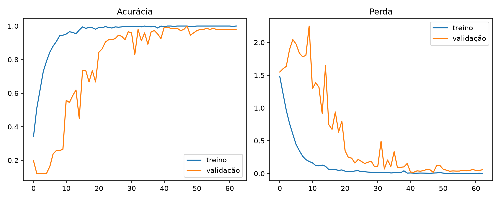

Um assistente de cozinha que entende você — mãos livres, totalmente offline, construído do zero com Python e TensorFlow.
As tecnologias e técnicas que fundamentam o projeto
Mel-Frequency Cepstral Coefficients
Representação compacta do áudio que imita a percepção humana de frequências. Extraído com a biblioteca Librosa, captura a "impressão digital" de cada comando.
Rede Neural Convolucional
Arquitetura de deep learning que trata o espectrograma MFCC como uma imagem. As camadas convolucionais aprendem filtros que detectam padrões acústicos específicos de cada comando.
Z-score por feature
Cada feature é centrada em zero com desvio padrão unitário. Isso acelera a convergência e impede que valores grandes dominem o aprendizado. Média e desvio são salvos para inferência.
Aumento sintético de dados
Técnica que gera variações do áudio original sem novas gravações, tornando o modelo mais robusto a condições reais como ruído ambiente, diferentes vozes e distâncias do microfone.
Regularização da rede
Overfitting ocorre quando o modelo "decora" o treino sem generalizar. O Dropout desativa neurônios aleatoriamente durante o treino, forçando a rede a aprender representações redundantes e robustas.
Classificação multiclasse
A camada final transforma as ativações em probabilidades que somam 100%. Em tempo real, o áudio do microfone passa pelo mesmo pipeline de extração e o modelo emite a classe com maior probabilidade.
Como o sistema processa cada comando em tempo real
Cronologia completa do desenvolvimento
Identificamos a dificuldade de consultar receitas com as mãos ocupadas durante o cozimento. O objetivo foi criar um sistema offline que reconhece comandos de voz curtos e associa cada um a uma ação específica na receita.
iniciar_receita
proximo_passo
repetir_instrucao
finalizar_receita
desconhecido
O script coletar_audios.py foi usado para gravar áudios de 2 segundos a 16 kHz. Foram coletadas ~30 gravações por classe, totalizando 153 amostras, em ambiente controlado mas variado (distâncias e momentos diferentes).
Com a biblioteca Librosa, cada WAV foi convertido em uma matriz (40 MFCC × T × 3 canais), onde os 3 canais são o MFCC bruto, o delta (variação temporal de 1ª ordem) e o delta-delta (2ª ordem). Isso fornece contexto temporal ao modelo.
Para compensar o dataset pequeno, cada áudio original gerou 5 cópias sintéticas, expandindo o dataset de 153 para 918 amostras (6× mais dados) sem nova coleta.
Modelo Sequential com TensorFlow/Keras. Cada bloco Conv-BN-Pool aprende representações progressivamente mais abstratas do espectrograma. A camada Global Average Pooling substitui o Flatten para reduzir parâmetros.
O dataset foi dividido 80/20 treino/teste (com estratificação). Callbacks de EarlyStopping (patience=15) e ReduceLROnPlateau evitaram overfitting e ajustaram a taxa de aprendizado automaticamente.
Métricas, gráficos e análise do desempenho do modelo
Mostra quantas previsões o modelo acertou (diagonal) e quais classes foram confundidas entre si.

Execute treinar_modelo.py para gerar este gráfico
Evolução da acurácia e perda durante o treinamento. Curvas próximas indicam boa generalização sem overfitting.

Execute treinar_modelo.py para gerar este gráfico
Preencha após rodar o treinamento. Os valores abaixo são editáveis.
| Classe | Precision | Recall | F1-Score | Acertos |
|---|---|---|---|---|
iniciar_receita |
||||
proximo_passo |
||||
repetir_instrucao |
||||
finalizar_receita |
||||
desconhecido |
💡 Clique nos campos para preencher com os valores do classification_report
O que este projeto pode se tornar
Controle receitas sem tocar no celular. Avance passos, repita instruções ou finalize o preparo apenas com a voz, ideal durante o manuseio de alimentos.
Adaptação para usuários com mobilidade reduzida. O sistema pode controlar eletrodomésticos inteligentes, temporizadores e assistentes domésticos com comandos personalizados.
Comandos de voz em ambientes industriais onde luvas ou sujeira impedem o toque. Reconhecimento de ordens em chão de fábrica, estoque ou linha de montagem.
Integração com um aplicativo de receitas real. O modelo pode ser convertido para TensorFlow Lite e rodar diretamente no celular, sem servidor, com latência mínima.
Com mais dados, o sistema pode aprender comandos em diferentes línguas ou dialetos, tornando-se uma base para assistentes de voz regionalizados e personalizáveis.
Usar modelos pré-treinados como YAMNet (Google) como base, reduzindo drasticamente a necessidade de dados e aumentando a acurácia para 95%+ com poucas amostras.
Interface interativa: grave sua voz e veja a IA classificar em tempo real
Para usar o demo, inicie o servidor no terminal e clique em Carregar Demo.
.venv\Scripts\python.exe demo.py
Fale a 20–40 cm do microfone
Ambiente silencioso = mais acertos
Fale claramente, sem pressa
Observe as barras de confiança para cada classe
Este projeto demonstra que características acústicas extraídas com Librosa podem ser usadas por uma CNN para reconhecer comandos de voz de forma eficaz em um assistente de cozinha. A qualidade do resultado depende da quantidade e variedade do dataset, do ruído do ambiente e da semelhança entre as frases.
Com a adição de Data Augmentation, o dataset foi expandido 6× sem novas gravações, tornando o modelo significativamente mais robusto. Como evolução natural, transfer learning com modelos pré-treinados e integração mobile representam os próximos passos.